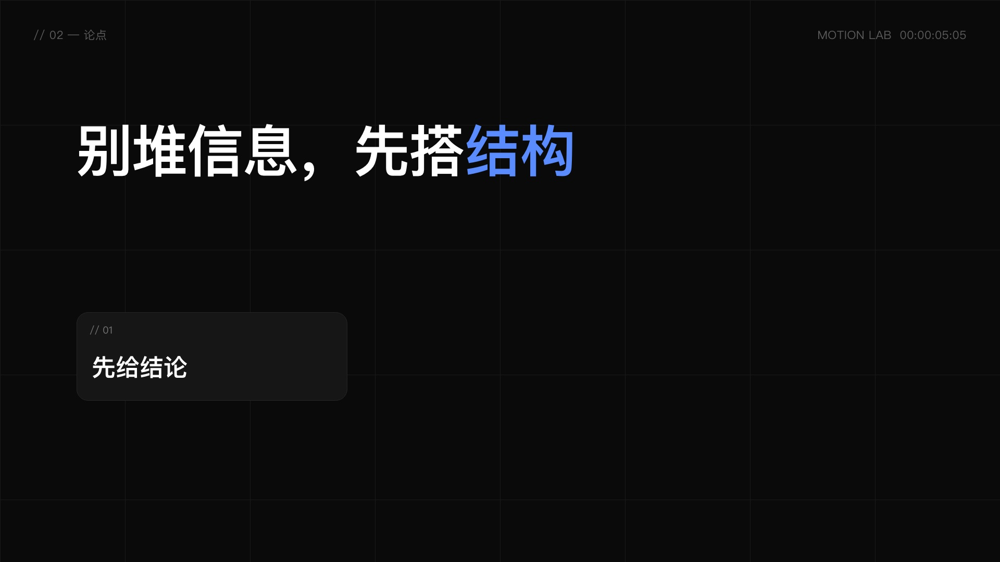
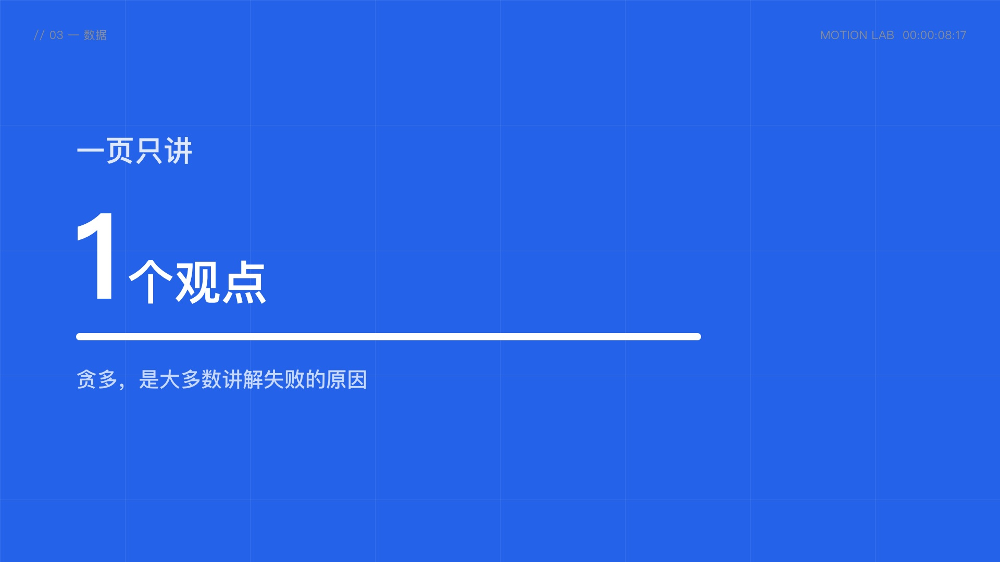
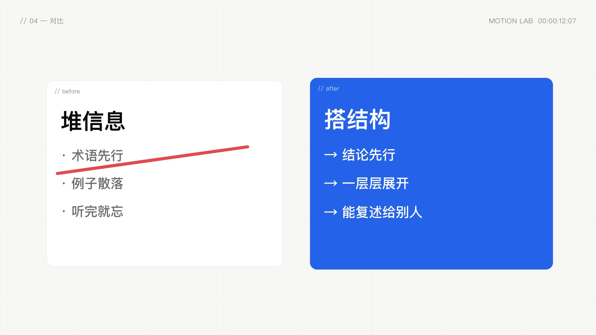
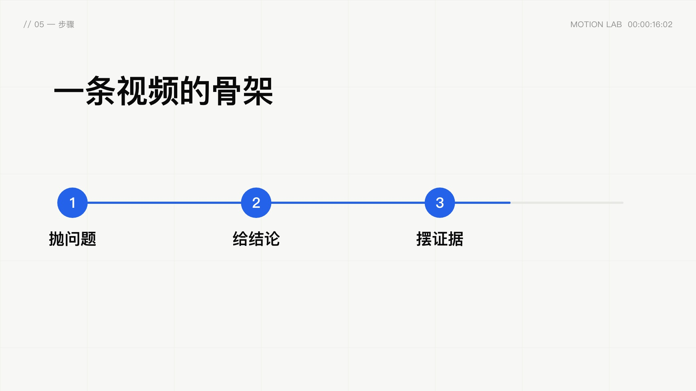
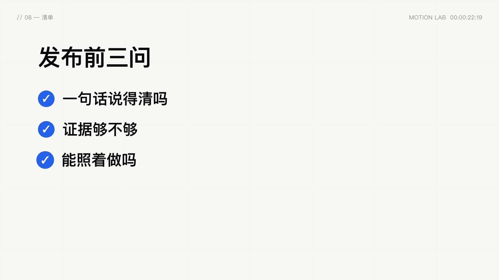
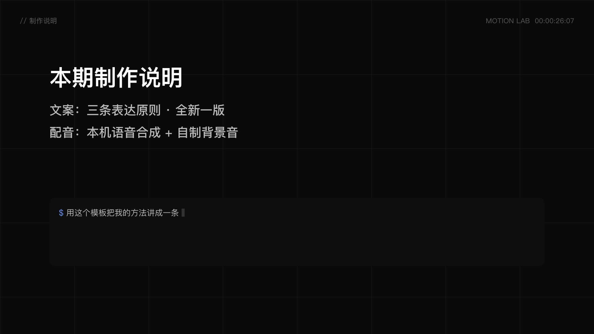

现代图文口播 · 参数化剪辑模板 · 关键帧预览 · 1920×1080 @ 24/1fps
frame 0 · t=0.00sframe 41 · t=1.71s
frame 125 · t=5.21s
frame 209 · t=8.71s
frame 295 · t=12.29s
frame 386 · t=16.08sframe 468 · t=19.50s
frame 547 · t=22.79s
frame 631 · t=26.29s frame 671 · t=27.96s
frame 671 · t=27.96s